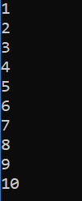
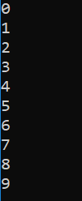
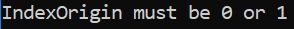
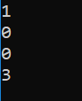
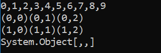

Tutorial
All the examples in this tutorial are to be executed as simple console applications written in C#.
The code for all of the examples is provided in the [DYALOG]/Samples/aplclasses/ directory:
-
aplclassesN/aplclassesN.dws – workspaces containing the source code for the Dyalog classes
-
aplclassesN/net/project/Program.cs – the corresponding C# source code for hosting the Dyalog classes.
Each workspace contains a .NET namespace called APLClasses which itself contains a single .NET class called Primitives that exports a single method called IndexGen. When executing each example, the workspace (aplclassesN.dws will be exported to the /net/project/bin/Debug/net8.0 sub‑directory as a .NET assembly called aplclassesN.dll.
Information
The examples in the tutorial require write access to successfully build the samples. Dyalog Ltd recommends copying the [DYALOG]/Samples/aplclasses directory to somewhere you have write access; in this tutorial that location will be identified as <your_dir>.
To compile the C# source code
- On the command line, navigate to <your_dir>/aplclassesN/net.
- Run build (Linux and macOS)/build.bat (Microsoft Windows).This invokes the Dyalog script compiler to compile aplclassesN.dws to aplclassesN.dll, and then invokes the C# compiler to compile the C# source code (Program.cs) to produce an executable called project.exe in <your_dir>/aplclassesN/net/project/bin/Debug/net8.0.
Example 1
As write access is required to successfully build the samples, this example assumes that you have copied the [DYALOG]/Samples/aplclasses directory to <your_dir>, where you have write access.
Load the aplclasses1.dws workspace from <your_dir>/aplclasses1, then view the Primitives class:
)ED APLClasses.Primitives
:Class Primitives
:using System
∇R←IndexGen N
:access public
:signature Int32[]←IndexGen Int32
R←⍳N
∇
:EndClass ⍝ PrimitivesPrimitives contains one public method/function, called IndexGen.
The public characteristics for the exported method are included in the definition of the class and its functions, as specified in the :Signature statement. This has the following syntax:
:Signature [rslttype←] name [arg1type [arg1name] [,argNtype [argNname]]*]where:
rslttypeis the type of the result returned by the function – in this example, the function returns an array of 32-bit integers.nameis the exported name (it can be different from the APL function name but it must be provided) – in the example, the name of the exported method isIndexGen.argNtype [argNname]are any arguments are to be supplied, each type-name pair separated from the next by a comma. In this example, the function takes a single integer as its argument.
When the class is fixed, APL will try to find the .NET data types that have been specified for the result and for the parameters. If one or more of the data types are not recognised as available .NET types, then a warning will be displayed in the status window and APL will not fix the class. If you see such a warning, you might have entered an incorrect data type name, not set :using correctly, or some other syntax problem has been detected (for example, the function could be missing a terminating ∇). In this example, the only data type used is System.Int32; as :using System is included in the definition, Int32 is correctly located.
Legacy
In earlier versions of Dyalog, the statements :Returns and :ParameterList were used instead of :Signature. They are still accepted for backwards compatibility reasons, but are considered deprecated.
aplclasses1
The C# source code (<your_dir>/aplclasses1/net/project/Program.cs) can be used to call the Dyalog.NET class. The using statements specify the names of .NET namespaces to be searched for unqualified class names. The program creates an object called apl of type Primitives by calling the new operator on that class. Then it calls the IndexGen method with a parameter of 10.
using System;
using APLClasses;
public class MainClass
{
public static void Main()
{
Primitives apl = new Primitives();
int[] rslt = apl.IndexGen(10);
for (int i=0;i<rslt.Length;i++)
Console.WriteLine(rslt[i]);
}
}To compile the C# source code:
- On the command line, navigate to <your_dir>/aplclasses1/net.
- Run build (Linux and macOS)/build.bat (Microsoft Windows).This invokes the Dyalog script compiler to compile aplclasses1.dws to aplclasses1.dll, and then invokes the C# compiler to compile the C# source code (Program.cs) to produce an executable called project.exe in <your_dir>/aplclasses1/net/project/bin/Debug/net8.0.
The output when the program is run is displayed in a console window:

Example 2
As write access is required to successfully build the samples, this example assumes that you have copied the [DYALOG]/Samples/aplclasses directory to <your_dir>, where you have write access.
In Example 1, APL supplied a default constructor, which was used to create an instance of the Primitives class. It was inherited from the base class (System.Object) and called without arguments. This example extends that by adding a constructor that specifies the value of ⎕IO.
Load the aplclasses2.dws workspace from <your_dir>/aplclasses2, then view the Primitives class:
↑⎕SRC APLClasses.Primitives
:Class Primitives
:Using System
∇ CTOR IO
:Implements constructor
:Access public
:Signature CTOR Int32 IO
⎕IO←IO
∇
∇ R←IndexGen N
:Access public
:Signature Int32[]←IndexGen Int32
R←⍳N
∇
:EndClass ⍝ Primitives
This version of Primitives contains a constructor function called CTOR which sets ⎕IO to the value of its argument. The name of this function is arbitrary.
aplclasses2
The C# source code (<your_dir>/aplclasses2/net/project/Program.cs) can be used to call the new version of the Dyalog .NET class:
using System;
using APLClasses;
public class MainClass
{
public static void Main()
{
Primitives apl = new Primitives(0);
int[] rslt = apl.IndexGen(10);
for (int i=0;i<rslt.Length;i++)
Console.WriteLine(rslt[i]);
}
}The program is the same as in Example 1, except that the code that creates an instance of the Primitives class now specifies an argument; in this example, 0.
To compile the C# source code:
- On the command line, navigate to <your_dir>/aplclasses2/net.
- Run build (Linux and macOS)/build.bat (Microsoft Windows).This invokes the Dyalog script compiler to compile aplclasses2.dws to aplclasses2.dll, and then invokes the C# compiler to compile the C# source code (Program.cs) to produce an executable called project.exe in <your_dir>/aplclasses2/net/project/bin/Debug/net8.0.
The output when the program is run is displayed in a console window: – the amended line numbers show the effect of changing the index origin from 1 (the default) to 0.

Example 3
As write access is required to successfully build the samples, this example assumes that you have copied the [DYALOG]/Samples/aplclasses directory to <your_dir>, where you have write access.
The correct .NET behaviour when an APL function fails with an error is to generate an exception; this example shows how this is achieved.
In .NET, exceptions are implemented as .NET classes. The base exception is implemented by the System.Exception class, but there are a number of super classes, such as System.ArgumentException and System.ArithmeticException that inherit from it.
⎕SIGNAL can be used to generate an exception. To do this, its right argument should be 90 and its left argument should be an object of type System.Exception or an object that inherits from System.Exception.
When you create the instance of the Exception class, you can specify a string (which will be its Message property) containing information about the error.
Load the aplclasses3.dws workspace from <your_dir>/aplclasses3, then view its improved (compared with that in Example 2) CTOR constructor function:
∇ CTOR IO;EX
[1] :Implements constructor
[2] :Access public
[3] :Signature CTOR Int32 IO
[4] :If IO∊0 1
[5] ⎕IO←IO
[6] :Else
[7] EX←⎕NEW ArgumentException,⊂⊂'IndexOrigin must be 0 or 1'
[8] EX ⎕SIGNAL 90
[9] :EndIf
∇
aplclasses3
The C# source code (<your_dir>/aplclasses3/net/project/Program.cs) contains code to catch the exception and display the exception message:
using System;
using APLClasses;
public class MainClass
{
public static void Main()
{
try
{
Primitives apl = new Primitives(2);
int[] rslt = apl.IndexGen(10);
for (int i=0;i<rslt.Length;i++)
Console.WriteLine(rslt[i]);
}
catch (Exception e)
{
Console.WriteLine(e.Message);
}
}
} To compile the C# source code:
- On the command line, navigate to <your_dir>/aplclasses3/net.
- Run build (Linux and macOS)/build.bat (Microsoft Windows).This invokes the Dyalog script compiler to compile aplclasses3.dws to aplclasses3.dll, and then invokes the C# compiler to compile the C# source code (Program.cs) to produce an executable called project.exe in <your_dir>/aplclasses3/net/project/bin/Debug/net8.0.
The output when the program is run is displayed in a console window:

Example 4
As write access is required to successfully build the samples, this example assumes that you have copied the [DYALOG]/Samples/aplclasses directory to <your_dir>, where you have write access.
This example builds on Example 3, and illustrates how you can implement constructor overloading by establishing several different constructor functions.
For this example, when a client application creates an instance of the Primitives class, is should be able to specify either the value of ⎕IO or the values of both ⎕IO and ⎕ML. The simplest way to implement this is to have two public constructor functions, CTOR1 and CTOR2, which call a private constructor function, CTOR.
Load the aplclasses4.dws workspace from <your_dir>/aplclasses4; the new version of the Primitives class includes the following additions:
∇ CTOR1 IO
[1] :Implements constructor
[2] :Access public
[3] :Signature CTOR1 Int32 IO
[4] CTOR IO 0
∇
∇ CTOR2 IOML
[1] :Implements constructor
[2] :Access public
[3] :Signature CTOR2 Int32 IO,Int32 ML
[4] CTOR IOML
∇
∇ CTOR IOML;EX
[1] IO ML←IOML
[2] :If ~IO∊0 1
[3] EX←⎕NEW ArgumentException,⊂⊂'IndexOrigin must be 0 or 1'
[4] EX ⎕SIGNAL 90
[5] :EndIf
[6] :If ~ML∊0 1 2 3
[7] EX←⎕NEW ArgumentException,⊂⊂'MigrationLevel must be 0, 1, 2 or 3'
[8] EX ⎕SIGNAL 90
[9] :EndIf
[10] ⎕IO ⎕ML←IO ML
∇ The :Signature statements for these three functions show that CTOR1 is defined as a constructor that takes a single Int32 parameter and CTOR2 is defined as a constructor that takes two Int32 parameters; CTOR has no .NET properties defined. In .NET terminology, CTOR is not a private constructor but rather an internal function that is invisible to the outside world.
Next, a function called GetIOML is defined and exported as a public method. This function returns the current values of ⎕IO and ⎕ML:
∇ r←GetIOML
[1] :access public
[2] :signature Int32[]←GetIOML
[3] r←⎕IO ⎕ML
∇aplclasses4
The C# source code (<your_dir>/aplclasses4/net/project/Program.cs) contains code to invoke the two different constructor functions CTOR1 and CTOR2:
using System;
using APLClasses;
public class MainClass
{
public static void Main()
{
Primitives apl10 = new Primitives(1);
int[] rslt10 = apl10.GetIOML();
for (int i=0;i<rslt10.Length;i++)
Console.WriteLine(rslt10[i]);
Primitives apl03 = new Primitives(0,3);
int[] rslt03 = apl03.GetIOML();
for (int i=0;i<rslt03.Length;i++)
Console.WriteLine(rslt03[i]);
}
}This code creates two instances of the Primitives class called apl10 and apl03; the first is created with a constructor parameter of (1), and the second with two constructor parameters (0,3).
The C# compiler matches the first call with CTOR1, because CTOR1 is defined to accept a single Int32 parameter. The second call is matched to CTOR2, because CTOR2 is defined to accept two Int32 parameters.
To compile the C# source code:
- On the command line, navigate to <your_dir>/aplclasses4/net.
- Run build (Linux and macOS)/build.bat (Microsoft Windows).This invokes the Dyalog script compiler to compile aplclasses4.dws to aplclasses4.dll, and then invokes the C# compiler to compile the C# source code (Program.cs) to produce an executable called project.exe in <your_dir>/aplclasses4/net/project/bin/Debug/net8.0.
The output when the program is run is displayed in a console window:

Example 5
As write access is required to successfully build the samples, this example assumes that you have copied the [DYALOG]/Samples/aplclasses directory to <your_dir>, where you have write access.
This example builds on Example 4, and illustrates how you can implement method overloading.
In this example, the requirement is to export three different versions of the IndexGen method; one that takes a single number as an argument, one that takes two numbers, and a third that takes any number of numbers. These are represented by three functions called IndexGen1, IndexGen2 and IndexGen3 respectively. The index generator function (monadic ⍳) performs all of these operations, therefore the three APL functions are identical. However, their public interfaces, as defined in their :Signature statement, are all different. The overloading is achieved by entering the same name for the exported method (IndexGen) for each of the three APL functions.
Load the aplclasses5.dws workspace from <your_dir>/aplclasses5; the new version of the Primitives class includes three different versions of IndexGen. The first is the version we have seen before, which is defined to take a single argument of type Int32 and to return a 1-dimensional array (vector) of type Int32:
∇ R←IndexGen1 N
[1] :Access public
[2] :Signature Int32[]←IndexGen Int32 N
[3] R←⍳N
∇The second version is defined to take two arguments of type Int32 and to return a 2‑dimensional array, each of whose elements is a 1-dimensional array (vector) of type Int32:
∇ R←IndexGen2 N
[1] :Access public
[2] :Signature Int32[][,]←IndexGen Int32 N1, Int32 N2
[3] R←⍳N
∇Although we could define seven more different versions of the method, taking 3, 4, 5 (and so on) numeric parameters, instead this method is defined more generally to take a single parameter that is a 1-dimemsional array (vector) of numbers, and to return a result of type Array. In practice we might use this version alone, but for a C# programmer, this is harder to use than the two other specific cases:
∇ R←IndexGen3 N
[1] :Access public
[2] :Signature Array←IndexGen Int32[] N
[3] R←⍳N
∇All these functions use the same descriptive name, IndexGen.
Information
A function can have several :Signature statements. As the three functions perform exactly the same operation, we could replace them with a single function:
∇ R←IndexGen1 N
[1] :Access public
[2] :Signature Int32[]←IndexGen Int32 N
[3] :Signature Int32[][,]←IndexGen Int32 N1, Int32 N2
[4] :Signature Array←IndexGen Int32[] N
[5] R←⍳N
∇aplclasses5
The C# source code (<your_dir>/aplclasses5/net/project/Program.cs) contains code to invoke the three different variants of IndexGen in the new aplclasses.dll. It uses a local sub-routine PrintArray():
using System;
using APLClasses;
public class MainClass
{
static void PrintArray(int[] arr)
{
for (int i=0;i<arr.Length;i++)
{
Console.Write(arr[i]);
if (i!=arr.Length-1)
Console.Write(",");
}
}
public static void Main()
{
Primitives apl = new Primitives(0);
int[] rslt = apl.IndexGen(10);
PrintArray(rslt);
Console.WriteLine("");
int[,][] rslt2 = apl.IndexGen(2,3);
for (int i=0;i<2;i++)
{
for (int j=0;j<3;j++)
{
int[] row = rslt2[i,j];
Console.Write("(");
PrintArray(row);
Console.Write(")");
}
Console.WriteLine("");
}
int[] args = new int[3];
args[0]=2;
args[1]=3;
args[2]=4;
Array rslt3 = apl.IndexGen(args);
Console.WriteLine(rslt3);
}
To compile the C# source code:
- On the command line, navigate to <your_dir>/aplclasses5/net.
- Run build (Linux and macOS)/build.bat (Microsoft Windows).This invokes the Dyalog script compiler to compile aplclasses5.dws to aplclasses5.dll, and then invokes the C# compiler to compile the C# source code (Program.cs) to produce an executable called project.exe in <your_dir>/aplclasses5/net/project/bin/Debug/net8.0.
The output when the program is run is displayed in a console window:
